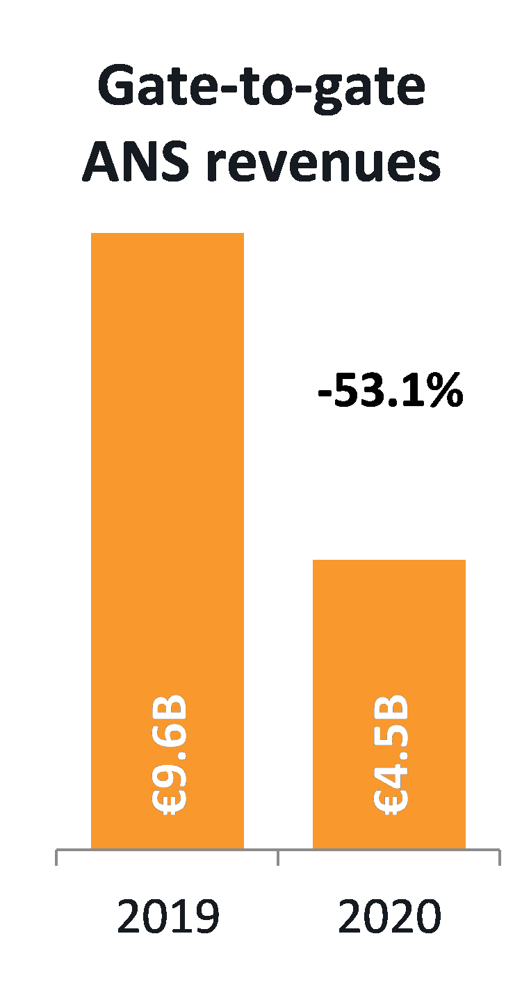
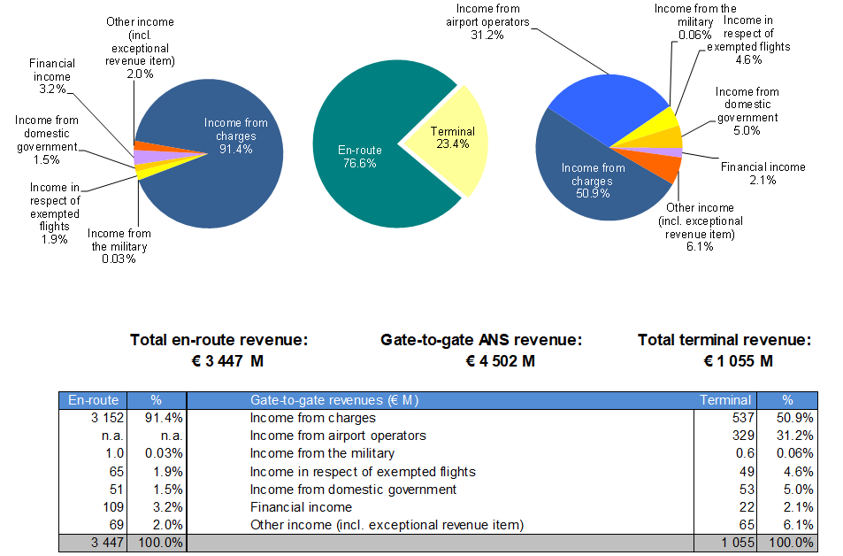
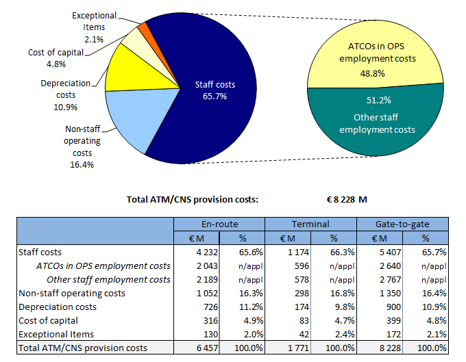
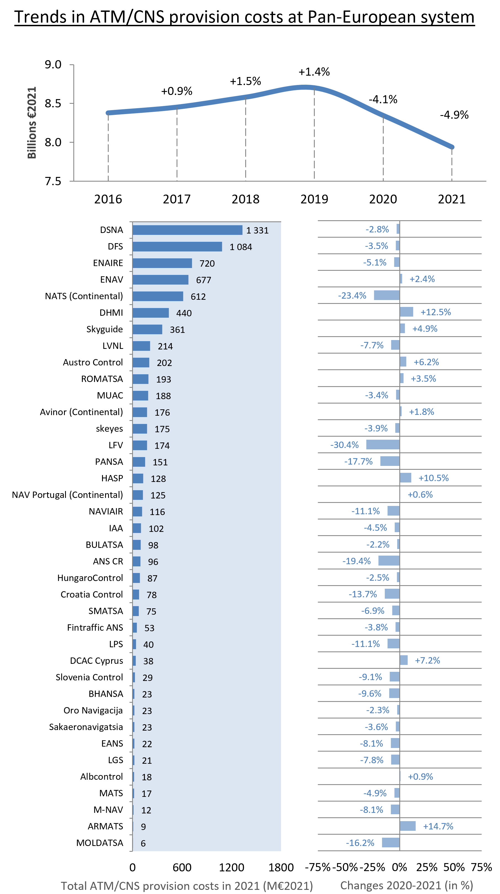
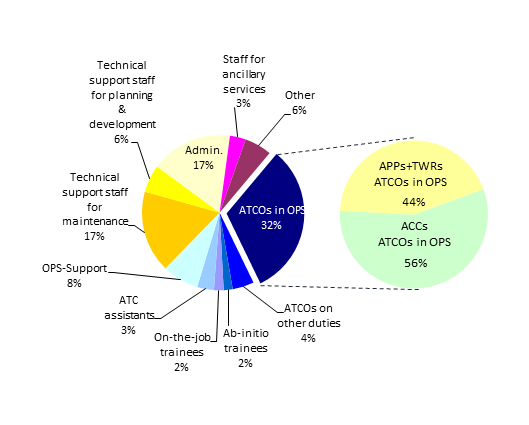
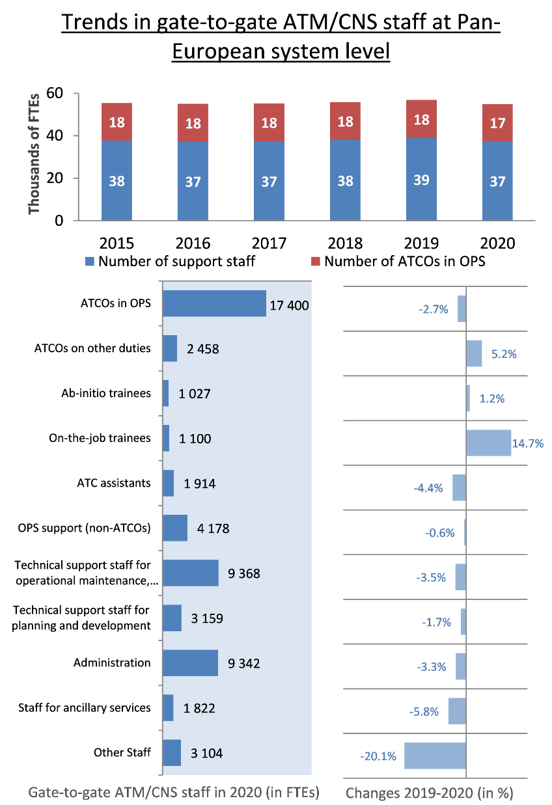

2 High-level revenues, costs and staff data
This section provides a preliminary presentation of high-level revenues, costs and staff data provided in ANSPs ACE 2020 data submissions. Total ANS revenues in 2020 amounted to

Across the Pan-European system, traffic in 2020 (measured in composite flight-hours) was -56.8% lower than in 2019 and total gate-to-gate revenues fell by -53.1%. In this context there were also some changes in the composition of ANSPs revenues, since the outbreak of COVID-19 did not affect all sources of revenues in the same proportion.
Some revenue items increased in 2020, such as income from exempted flights (+11.3%), income from domestic governments (+11.3%) and other revenues (+21.6%). However, these increases (+
At terminal level, the share of income from airport operator rose from 21.1% in 2019 to 31.2% in 2020 as this revenue stream reduced much less than the income from terminal charges.
The ACE benchmarking analysis focuses on the specific costs of providing gate-to-gate ATM/CNS services which amounted to

In 2020, the five largest ANSPs (ENAIRE, ENAV, DFS, DSNA and NATS) bore some 56% of total Pan-European gate-to-gate ATM/CNS provision costs, while the five smallest ANSPs accounted for some 1% (see bottom left part of Figure 2.3).
ATM/CNS provision costs increased by +1.3% p.a. between 2015 and 2019, and then fell by -5.0% in 2020 as ANSPs implemented a range of measures to reduce costs and preserve liquidities. As shown in the bottom right part of Figure 2.3, the -5.0% decrease in ATM/CNS costs in 2020 reflects reductions for 31 out of 38 ANSPs. More details on the changes in ANSPs ATM/CNS provision costs in 2020 will be available in the final ACE 2020 benchmarking report.
In response to the challenges presented by the extraordinary drop in traffic, ANSPs implemented a range of cost-containment measures in 2020, leading to an overall reduction in ATM/CNS costs of -
The full effect of these measures is however not yet visible in the 2020 data since, for instance, some redundancy plans were negotiated during the year but the actual impact on the number of staff, and on the staff costs, will become visible only in the 2021 data. Some ANSPs implementing redundancy plans in 2020 even recorded cost increases in the year, reflecting provisions or payments to the staff made redundant. This was the main driver for an increase in exceptional costs of some +
Staff costs were by far the main source of savings in 2020 (-
- Short-time work / furlough schemes, where applicable, with part of employees’ salaries paid by the State either directly to the employees or reducing ANSPs wage bill.
- Reduced staff numbers (discussed further below).
- Reduced level of remuneration through reduction or freeze of base salaries, reduction or suspension of variable part of salaries such as overtime payments and performance bonuses.
A majority of ANSPs also reduced non-staff operating costs by carrying out only essential maintenance, reducing utilities costs and non-essential training activities. This resulted in a decrease of some -
Finally, the cancellation or deferral of non-essential investments resulted in lower depreciation costs (-


The Pan-European employed a total of 55 712 staff in 2020 (comprising 54 871 staff providing ATM/CNS services and 845 internal MET staff). Some 17 400 staff (32%) were ATCOs working on operational duty, split between ACCs (56%) and APP/TWR facilities (44%). On average, 2.2 additional staff are required for every ATCO in OPS in Europe.


After four years of continuous increase in the number of ATM/CNS staff (+0.6% p.a. between 2015 and 2019, or +1 384 FTEs), 2020 showed a -3.4% reduction (-1 936 FTEs).
The lower staff number observed for 2020 mainly reflects decreases in the following staff categories:
- Other staff (-779 FTEs or -20.1%);
- ATCOs in OPS (-485 FTEs, or -2.7%);
- Technical support for operational maintenance (-340 FTEs, or -3.5%);
- Administrative staff (-323 FTEs, or -3.3%); and,
- Staff for ancillary services (-112 FTEs or -5.8%).
On the other hand, increases are observed for ATCOs on other duties (+121 FTEs) and on-the-job trainees (+141 FTEs), reflecting a reallocation of some ATCOs from operational to non-operational duties due to the traffic reduction in 2020, and the fact that newly recruited ATCOs had to complete their on-the-job training.
In addition to the measures on staff costs already mentioned above (redundancies, short-time work / furlough schemes), it is important to note that during the lockdown periods, some ANSPs staff had to consume accumulated holidays not used in previous years and/or made use of pre-retirement schemes. Furthermore, depending on the nature of their work, some staff were inevitably left without specific tasks, however, in most cases, they continued to be counted as full time equivalents in 2020.
It is also important to note that the trend observed at Pan-European system level is heavily affected by the reporting of very large reductions by UkSATSE. Excluding UkSATSE, the total number of ATM/CNS staff in 2020 would be close to its 2019 level (-0.1%).
The trends shown in the Figure 2.5 above should therefore be interpreted with caution.
Although some ANSPs might have discontinued the ATCO recruitment process during the pandemic, the number of ab-initio trainees increased by +1.2% in 2020. It will be interesting to monitor this trend in future years as the long time period required to train a fully qualified ATCO might have an impact on the level the capacity offered by ANSPs when traffic returns to pre-crisis levels.